感謝您對「自由軟體鑄造場」的支持與愛護，十多年來「自由軟體鑄造場」受中央研究院支持，並在資訊科學研究所以及資訊科技創新研究中心執行，現已完成階段性的任務。 原網站預計持續維運至 2021年底，網站內容基本上不會再更動。本網站由 Denny Huang 備份封存。
也紀念我們永遠的朋友 李士傑先生（Shih-Chieh Ilya Li）。
也紀念我們永遠的朋友 李士傑先生（Shih-Chieh Ilya Li）。
技術專欄  FreeBSD 基礎設定（下）
FreeBSD 基礎設定（下）
FreeBSD 基礎設定（下）
建立日期 2011-05-19 06:29 最近更新在 2011-10-12 10:02
前言
在前二篇文章，FreeBSD 基礎設定（上）以及 FreeBSD 基礎設定（中），已經將 FreeBSD 主機相關基礎配置完成。例如：使用者帳號、管理者帳號、網路連線部份、遠端管理及 Ports Tree 的更新……等。本篇是 FreeBSD 基礎設定系列的最後一篇，我們將先討論當 FreeBSD 總部發佈官方安全性更新時，我們該如何為 FreeBSD 主機進行漏洞修補（可能需要重新編譯核心），使得 FreeBSD 主機能夠在穩定且安全性無虞的環境下保持正常運作。
接著討論當 FreeBSD 主機上線運作後，希望系統能夠定期將系統相關資訊。例如：磁碟空間使用率、郵件佇列狀況、安全性檢查資訊等，這些與主機相關的資訊，自動寄送到主機管理人員的郵件信箱內。因此管理人員每天僅需要查看閱讀收到的系統資訊郵件內容，是否有需要注意或調整的地方即可，而不需要每天手動進行遠端登入主機來查看相關訊息。
最後則是討論 FreeBSD 主機遠端連線 SSH 服務的基本安全性設定，以便防止有人使用自動嘗試登入工具來企圖登入主機。另外還有 FreeBSD 主機的運作時間自動與網際網路上 NTP 伺服器或企業內部自行架設的 NTP 時間伺服器進行主機時間校對同步的動作。並且了解 FreeBSD 主機啟動了哪些服務，開啟了哪些相對應的 Port 還有相關服務執行序的樹狀結構，以便查詢及了解主機的整體安全性。
漏洞修補及安全性更新
實作環境
* FreeBSD 8.2 Release
FreeBSD-SA-11:01.mountd (8.2-RELEASE-p1)
* openntpd-4.6_1,2
pstree-2.33
作業系統安全性相信是每個 IT 人員都要了解並隨時注意的，不管您提供的服務是採用何種作業系統或多或少都會有安全性漏洞的出現。作業系統的安全性並非某些常在資訊新聞或技術論壇上出沒的愛好者所云，該作業系統或者該軟體是如何安全、如何堅不可破。通常只在於漏洞有沒有被發現並執行攻擊而已。因此系統的管理人員都應該隨時注意所使用的作業系統，其官方網站上是否有發佈新的安全性更新，以便進行漏洞修補。例如：採用 Microsoft 作業系統的管理者，應該在每個月官方發佈安全性修正時，第一時間了解該修正檔所要修補的漏洞及相關資訊後，立刻為自身所管理的主機進行安全性更新以保持作業系統的安全性。
俗話說「沒有醜女人，只有懶女人。」這樣的精神套用在 IT 管理上也是相通的：「沒有絕對安全的作業系統，只有懶惰的 IT 管理者。」在筆者的自身經驗中，曾經碰到過某企業的 IT 管理人員在 Microsoft 發佈了安全性更新之後遲遲未對企業內部伺服器進行漏洞修補，因而造成企業用來提供商業服務的作業系統因為此一系統的漏洞，導致被入侵而發生資料遺失並且外洩的慘劇。追根究底會發生這樣的情況，即使該企業使用最優秀的防火牆設備、高智能的入侵偵測……等防護機制都將無法防治。因為入侵者是依尋著正常管道存取服務伺服器，並且透過系統漏洞進行入侵的動作，而這一切的起因就只是因為 IT 管理人員不重視官方所發佈的安全性更新所導致。因此建議所有管理者都應該重視企業營運伺服器的系統安全性。
FreeBSD 官方會不定期公告安全性更新及漏洞修補資訊於網站上，每個安全性更新項目內都有非常詳細的說明。例如：影響的系統模組名稱、此一漏洞的公佈時間、影響的作業系統版本、哪些作業系統已經修正此漏洞……等，以便您了解此漏洞修補的相關資訊以及套用這項安全性更新後對於系統可能造成的影響。
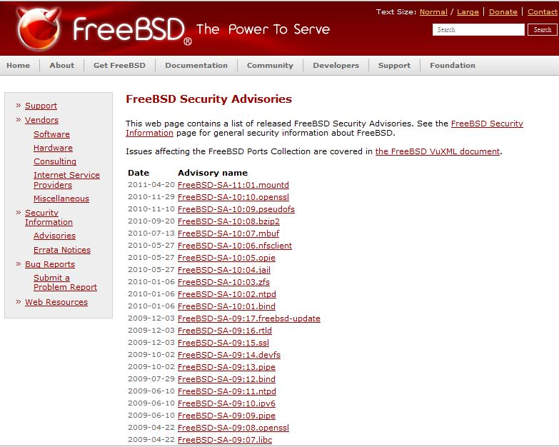
▲ 圖1 FreeBSD 官方安全性公告網頁
freebsd-update 為 這個 E-mail 地址已經被防止灌水惡意程式保護，您需要啟用 Java Script 才能觀看 （FreeBSD committer 及 Security team 成員）所開發，此工具為透過 Binary Updates 方式來為 FreeBSD 主機進行下載及安裝 FreeBSD 總部所發行的安全性更新修補檔案，此安全性更新工具能有效改善以往安裝安全性修補檔案的煩雜流程，例如手動下載更新檔、將漏洞檔案及更新檔案進行合併……等步驟。
此更新指令於 FreeBSD 6.2-Release 之後的版本便內建於系統內 (Base System)，因此您不需安裝任何套件便可以輕鬆使用 freebsd-update 指令配合相關參數來自動下載安全性更新並安裝到 FreeBSD 主機上。請注意！此安全性更新工具僅僅適用於 Release 版本，意即不適用於 Current 及 Stable 版本。
在執行下載安全性更新以前建議您先將安全性更新來源網站修改為靠近您的國內主機，以此次實作來說，我們將預設下載指向國外網站 update.freebsd.org 修改為指向國內鏡像網站 update.tw.freebsd.org。如此一來可以有效減少下載安全性更新修補檔案時，所使用的頻寬並加快下載速度，下載後的相關安全性更新檔案將存放於 /var/db/freebsd-update 目錄下。
指定下載來源為國內網站後，首先請使用 freebsd-update 指令配合參數 fetch，來下載相關安全性更新，此時更新工具會自動比對目前 FreeBSD 主機與安全性更新來源網站上的安全性更新版本，互相比對之後，下載本地主機所需要的安全性更新修補檔案。系統此時也會顯示相關的安全性在更新之後會影響到的檔案清單，了解會異動的檔案後，此時接著使用參數 install 來安裝剛才下載完成的安全性更新，完成安裝安全性更新後請將 FreeBSD 主機重新啟動以便套用生效。若您更新後感覺有對系統造成不良影響時，首先建議您再次閱讀相關更新前後所需要注意的內容，或者使用參數 rollback 來回復至更新前的狀態。
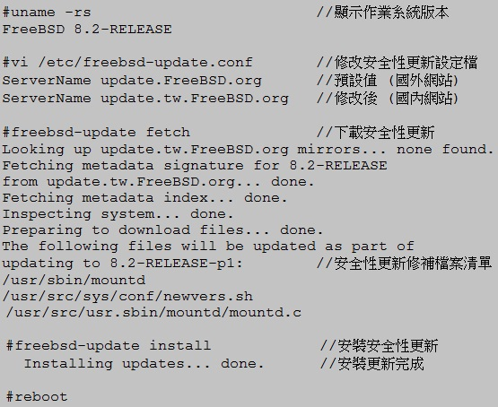
▲ 圖2 修改來源網站為國內後執行下載及安裝安全性更新
重新啟動主機後，請使用指令 uname –rs 來確定安全性更新是否完成，您可能會發現輸出的內容並沒有加上安全性更新版本號碼 (-p1)，原因是 uname 指令是抓取系統核心的內容，但是有些安全性更新並不需要重新編譯核心 (Compile Kernel)，有些則需要。您可能會問，那何時該重新編譯核心，何時不需要？該如何確定安全性更新已經安裝到 FreeBSD 主機上了呢？
- 首先請您先參考 FreeBSD Security Advisories 上相關安全性更新內容，若是該安全性更新需要重新編譯核心，則安全性更新內的解決方案說明項目內，通常會有這段文字「重新編譯您的核心並重新啟動系統 (Recompile your kernel and reboot the system)」。
- 若是該安全性更新不需要重新編譯核心，但是進行安裝後還是看不到更新版本號碼，此時您可再次執行 freebsd-update 指令，配合 fetch 參數，即可確認系統是否已經安裝了安全性更新，若已經是最新安全性更新版本，則會顯示「不需要更新 (No updates needed) 」等字眼。
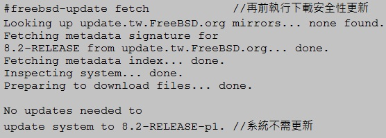
▲ 圖3 系統已經具有最新安全性更新因此不需要再更新
若是該安全性更新需要「修補核心（即重新編譯核心）」，或者您實在很想看到使用 uname –rs 指令時會顯示出安全性更新版本號碼才安心，則請您安裝好安全性更新後重新編譯您的核心即可。在此為了減少不必要的篇幅，關於編譯核心的詳細資訊請您參考「FreeBSD 使用手冊—第 8 章設定 FreeBSD Kernel」，以下為使用預設核心 (GENERIC) 進行編譯核心的操作。
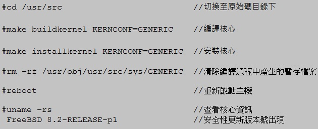
▲ 圖4 使用預設核心 GENERIC 進行編譯及安裝
定期寄送系統資訊
當 FreeBSD 主機上線運作後，我們希望系統能夠定期，例如每天、每週、每月自動將系統的相關資訊匯整後，寄送到主機管理人員的郵件信箱內，如此管理人員只要隨時注意所收到每台管理主機的系統資訊郵件內容，待需要進行相關調整時，再遠端登入主機進行管理即可。
系統在預設情況下會在每天凌晨 3 點 01 分、每週六凌晨 4 點 15 分、每月 1 號早上 5 點 30 分時會執行系統預先撰寫好的自動維護 Shell Script 執行檔，來為系統執行相關的清理及備份工作。例如：清除舊的系統訊息、清除 /var 下相關資料夾內舊資料、備份使用者帳號及群組設定檔 (/etc/master.passwd、/etc/group)、備份郵件別名設定檔 (/etc/mail/aliases)……等。
同時，系統每天也會自動進行系統安全檢查作業 (Security check)。例如檢查是否有新增 setuid 程式、檢查系統掛載磁碟狀況、檢查並列出所有 UID 為 0 的使用者帳號、檢查並列出沒有密碼的使用者帳號、列出防火牆 (ipfw、ipf、pf) 拒絕連線記錄、列出 TCP Wrapper 拒絕連線記錄……等。
若您想要了解上述系統定期執行的清理舊資料及備份重要檔案，還有安全檢查作業等詳細內容，您可以切換至 /etc/periodic 目錄下，裡面有四個資料夾分別是：每天 (daily)、每週 (weekly)、每月 (monthly)、安全性檢查 (security)，裡面有相關的自動維護 Shell Script 可以查看，而 Script 前面的數字則表示執行維護動作時的先後順序。
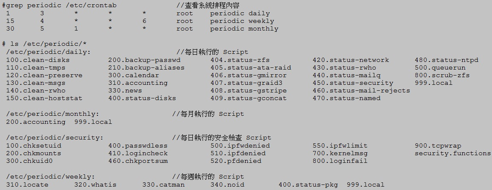
▲ 圖5 查看系統排程資訊及自動執行 Shell Script
接下來，便是設定當系統執行完上述的安全檢查及清理作業後要將相關資訊寄給誰，預設情況下系統會寄給 root 這個系統管理者帳號，我們可以透過修改郵件別名設定檔 (/etc/aliases) 將寄給 root 管理者帳號的郵件自動轉寄給相關的管理人員。修改過郵件別名設定檔後，請記得執行指令 newaliases 才會套用更新，當郵件別名套用更新後，您可以馬上執行指令 periodic daily 來立刻執行每日例行的系統清理及安全檢查作業，並測試剛才設定的管理人員郵件是否收到系統資訊郵件 (daily / secruity run output)。
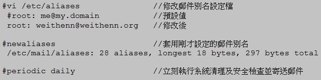
▲ 圖6 修改郵件別名設定檔並測試寄送系統資訊郵件
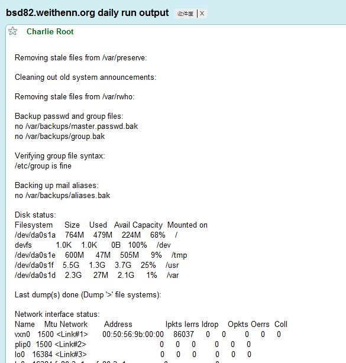
▲ 圖7 管理人員收到的每日維護系統資訊郵件
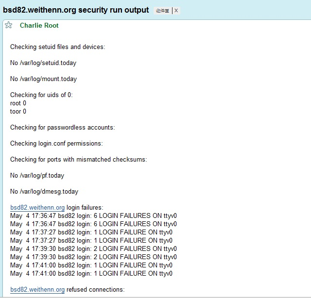
▲ 圖8 管理人員收到的每日安全性檢查系統資訊郵件
SSH 基礎防護設定
TCP Wrappers 可以保護 inetd 所提供的相關服務，防護規則為採用 First Match 方式，意即先讀取到的規則直接套用執行不須理會後面的規則。防護設定上非常簡單易懂，不像一般防火牆設定複雜難懂，並且具有一定程度的保護效果。但唯一缺點就是僅能針對 TCP daemon 進行保護，意即 UPD daemon 無法進行防護。
若您要進行設定，首先必須要啟動 inetd 服務，接著修改 TCP Wrappers 設定檔 (/etc/hosts.allow)。其設定檔內容可以分成三個小區段來看，分別是「服務名稱 (deamon)、來源 IP 位址或網域名稱 FQDN、連線回應為允許 (allow) 或拒絕 (deny)」，每個小區段之間使用冒號 (:) 為分隔符號，了解如何設定後，我們便可以著手進行設定及測試，此次我們以防護主機上的 SSH 服務為例，設定只有允許的 IP 網段可以使用 SSH 遠端登入此台 FreeBSD 主機（允許連線後才進行使用者帳號及密碼驗證），並且拒絕允許的 IP 網段中其中一台主機的連線要求。最後其餘的 IP 位址欲嘗試使用 SSH 遠端登入主機時，則拒絕其連線要求。由於已經拒絕連線要求，因此主機自然就不需要進行使用者帳號及密碼驗證的動作，有效增加主機安全性。
在設定以前還有三個小地方要注意，首先是來源 IP 網段的遮罩設定值，TCP Wrappers 支援的網路遮罩為 255.255.255.0 這種型式，而不是 /24，若您設定 /24 這種網路遮罩，則該行防護設定規則將無法運作，第二點要注意的是，修改 TCP Wrappers 設定檔內容後，當存檔離開的那一剎那，所設定的防護內容便立刻生效（不需要重新啟動或載入 inetd 服務），最後要注意的是，防護規則僅套用於 「新進 Session」，也就是說，設定阻擋規則時已經存在於主機上舊有的連線 Session，並不會自動斷線離開，而是新進來的 Session 才會進行阻擋的動作。
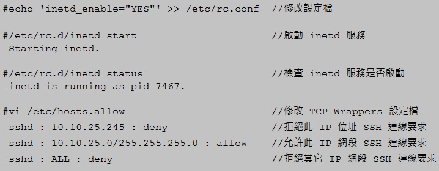
▲ 圖9 啟動 inetd 服務及修改 TCP Wrappers 設定檔
下列測試為當 TCP Wrappers 允許 SSH 連線要求時，我們可以看到 .36 這台 FreeBSD 主機回應請您輸入使用者登入密碼之訊息，若是 TCP Wrappers 拒絕 SSH 連線要求時，則直接回應遠端主機已關閉 SSH 連線要求。
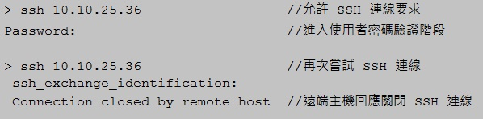
▲ 圖10 主機使用 TCP Wrappers 允許或拒絕 SSH 連線要求時系統的反應
主機時間校對
不知您是否有過這樣的經驗，當主機上線運作一段時間後，每台機器上的時間顯示，便開始發生有的主機時間比較快，有的比較慢，這樣或多或少的時間差，而且使用不同的作業系統時狀況將更為明顯。事實上在企業環境中不管是任何等級的伺服器，當上線運作一段時間之後，機器的時間一定會與中原標準時間有些許誤差，即使是二台硬體一模一樣的伺服器同時上線運作，一段時間之後，二台主機之間的系統時間也有可能不相同，會造成這樣的誤差結果在於，硬體設備中，負責計算時間的晶體震盪元件 (Crystal Oscillator) 在製造過程中或多或少都會有些許誤差，也正是因為這一個些許的誤差，導致所震盪出來的頻率無法完全精準，因此導致伺服器上線運作一段時間後發生時間誤差的現象。
此設定中，我們為主機安裝 OpenNTPD 客戶端來進行時間校對的方式，它與一般的 NTP 時間校對方式有著明顯不同的特點，一般 NTP 客戶端的時間校對方式為「強迫性一次調整到位」的方式來調整系統時間，這樣比較偏向暴力性的一次到位，同步系統時間的方法在某些狀況下可能會對主機運作穩定性上產生問題。此次安裝的 OpenNTPD 客戶端的時間校對方式為：當 OpenNTPD 客戶端與時間伺服器有時間誤差時，主機將會每隔幾分鐘進行系統時間「微調」，慢慢調整，直到最後與時間伺服器上的標準時間達成一致，對於企業營運環境要求高穩定性的伺服器來說，此時間校對相對而言是比較適合的。
OpenNTPD 套件為凡事講求高品質程式碼及系統高安全性 OpenBSD 的子計劃項目之一，也因此它繼承 OpenBSD 的設計理念，OpenNTPD 其目標就是提供使用者一個既安全又穩定的 NTP 服務。在 OpenNTPD 安裝過程中系統會自動建立 _ntp 這個使用者帳號及群組至系統中，屆時也會利用此一帳號來啟動 OpenNTPD 服務，避免因為服務使用 root 帳號啟動，造成此服務若被攻陷，便可取得系統管理者權限的安全性漏洞風險，另外在開始安裝 OpenNTPD 套件以前，請先執行更新 Ports Tree 的動作，以便確保您所安裝的 OpenNTPD 套件為最新發行的穩定版本，那麼就讓我們開始來安裝 OpenNTPD 套件吧!! 請鍵入如下指令切換至 openntpd 套件路徑後，執行套件安裝的動作，並清除安裝過程中所產生的暫存檔案。
下列實作設定中所指定的 NTP 時間伺服器為中華電信研究所時間與頻率國家標準實驗室，若是您的企業網路內已經架設 NTP 時間伺服器，請將該網址改為您內部的時間伺服器即可，當設定完成並啟動 ntpd 服務後，我們可以看到系統每隔一段時間會開始微調系統時間而不是一次調整到位。
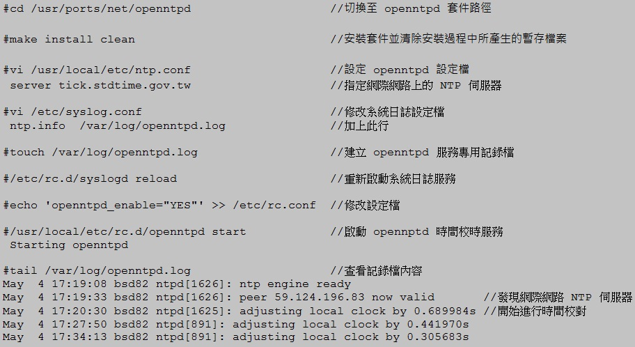
▲ 圖11 安裝 openntpd 套件及修改設定檔後啟動 opennptd 服務進行主機校時
了解主機啟動哪些服務及通訊 Port
了解系統啟動哪些服務及該服務開啟了哪些服務，Port 對於主機的防護也是基本功，我們可以使用內建的 sockstat 指令，來顯示系統目前啟動哪些服務及使用什麼協定，又有誰連到這個服務上。相關欄位解釋如下：
USER：該執行序或服務的擁有者名稱 (Process owner)，通常為啟動該服務的使用者帳號名稱
* COMMAND：執行序或服務名稱，啟動服務的名稱。例如：SSH 為 sshd
* PID：執行序編號 (Process ID)
* FD：Socket 檔案描述編號，0：標準輸入 (stdin)、1：標準輸出 (stdout)、2：標準錯誤輸出 (stderr)……等。
* PROTO：該服務所使用的通訊協定
* LOCAL ADDRESS：本機 IP 位址及開啟的 Port 號
* FOREIGN ADDRESS：遠端 IP 位址及開啟的 Port 號
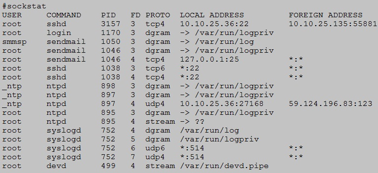
▲ 圖12 透過 sockstat 指令了解主機啟動哪些服務及通訊 Port 號
運用 sockstat 指令了解 FreeBSD 主機執行哪些服務 (daemon) 與開啟哪些 Port 號之後，我們可以進一步透過了解執行序，在系統或服務出現問題後利於除錯，若只是要查詢系統有哪些執行序時，我們可以使用內建的 ps 指令配合相關參數進行查詢，但若是想要了解執行序的樹狀結構（意即母程序及子程序的樹狀關系）時，內建的 ps 指令可能略顯不足，此次實作中我們安裝 pstree 套件來輔助我們即時了解執行序樹狀結構。
安裝 pstree 套件完成後，我們欲查詢 ntpd 時間校對服務的執行序樹狀結構，如下所示，整個 ntpd 服務的母程序為 PID 895，並且負責帶起二個子程序 PID 897 ntp engine 與 PID898 dns engine。
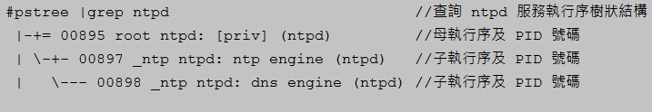
▲ 圖13 查看 ntpd 服務執行序樹狀結構
結語
在筆者的經驗中，一般 Linux 使用者或初學者剛開始接觸 FreeBSD 作業系統時總是覺得不是很好操作或駕馭它，所以常常就放棄，轉而投入其它作業系統的懷抱中，然而追究其原因，常常只是因為對於 FreeBSD 作業環境的不了解以及不熟悉，所產生的距離感所導致。因此筆者期望能夠透過這三篇 FreeBSD 基礎設定文章，讓讀者對於 FreeBSD 作業系統有初步的認識，並且配合相關基礎設定的實作之後，能夠協助讀者建立屬於自已順手好用又安全的 FreeBSD 作業系統。
您也許有興趣閱讀以下文章:
- FreeBSD 基礎設定（中） - 2011-05-05
- FreeBSD 基礎設定（上） - 2011-04-22
專欄總覽


自由軟體鑄造場 製作 最佳瀏覽狀態：IE7或Firefox2.0以上 (建議使用Firefox) ‧ 解析度1024*768
E-Mail：contact@openfoundry.org Address：台北市南港區研究院路2段128號 中央研究院資訊科學研究所 . 隱私權條款. 使用條款
E-Mail：contact@openfoundry.org Address：台北市南港區研究院路2段128號 中央研究院資訊科學研究所 . 隱私權條款. 使用條款